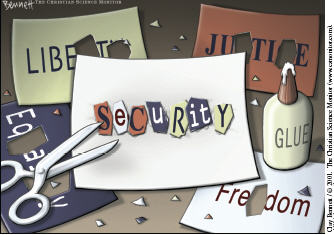

Lesson 1 – Civil Emergencies and Civil Rights
Get Focused
As you have seen from earlier lessons, democratic governments are often challenged with the task of representing the will of the majority, and this can be very formidable. This is especially true when civil conflict, terrorism, pandemics, or other emergencies arise which test the mettle of elected representatives.
In such situations, the government must balance the individual rights and freedoms of citizens with the need to provide security for the entire nation and its institutions. In this lesson you will be examining the question:
To what extent should rights and freedoms be curtailed during times of conflict or civil emergencies?
Explore
In order to familiarize yourself with the key issue for this lesson, you will examine three instances in which the Canadian government limited the civil rights of citizens in the name of national security. These are the internment of Germans and Ukrainians living in Canada during WW I (1914-1920), the internment of Japanese people living in Canada during WW II (1939-1945) and the October Crisis of 1970.
The War Measures Act - prior to October Crisis
The War Measures Act was a law passed in 1914 which allowed for the federal government of Canada, or more specifically, the cabinet, to rule by emergency decree and be able to respond quickly to perceived national threats. The prime minister and cabinet ministers would be allowed to take measures without the support of the House of Commons and Senate. This decree gave the government the power to limit certain rights and freedoms where it was deemed necessary for national security and public order. Prior to 1970, the War Measures Act had only been invoked in response to external threats to Canada.
World War I
In World War l the Canadian government interned persons of German and Ukrainian origin who were living in Canada. Germans were interned because Canada was at war with Germany and it was felt that German-Canadians might harbour a lingering allegiance to Germany that would lead them to commit acts of espionage or sabotage.
Ukrainians were also interned because the Austro-Hungarian Empire, with which Canada was also at war, had ethnic Ukrainian minorities living within its boundaries. Even if they were legitimate citizens of Canada, individuals from both of these groups were labelled as potential threats to national security based solely on their ancestry. They were typically interned in remote camps.
When the war ended, they were eventually released but at that time were provided with no compensation for the time or financial losses that resulted from their internment.
World War II
In World War ll, the federal government interned people of Japanese origin or ancestry. In theory this internment was carried out to prevent acts of sabotage and spying by Japanese-Canadians who might be sympathetic to imperial Japan, with which Canada was at war.
Despite RCMP reports which stated they represented no significant threat to Canada, Japanese-Canadians were labelled as “enemy aliens” on similar concerns that had led to the internment of other groups in World War I. Canadians of Japanese descent were rounded up and sent to camps in the British Columbia interior where they often had to endure very harsh conditions. Public outcry over the cost of camps led the government to use the provisions of the War Measures Act to confiscate the property of the internees and sell it off to help pay for their imprisonment.
The War Measures Act was also used to seize land from and relocate the Kettle and Stony Point Band (now Kettle and Stony Point First Nation) to create a military base (search Ipperwash Crisis).
The Cold War
Just after the end of World War II in 1945, a clerk at the Soviet embassy in Ottawa named Igor Gouzenko defected to Canada. He provided the Canadian government with irrefutable evidence that the Soviet Union was operating a spy ring within Canada. Following Gouzenko’s revelations, the government of Canada used the still in force War Measures Act from WWII to facilitate the arrest, interrogation, and prosecution of suspected communist spies.
The use of the War Measures Act during the two world wars and the Cold War continues to be controversial even today. Years after the wars, survivors and descendants of the Ukrainian and Japanese internments lobbied the government for an official apology and financial redress for infringements of rights that were carried out under the provisions of the Act. Eventually, the Canadian government issued apologies and provided limited monetary compensation to former internees.
Journal/Notes
Should the rights of an individual be suspended on the basis of the national security risk he or she might pose? Is it prudent to arrest and intern individuals based on their cultural, religious, or personal affiliations with groups or nations that threaten national security? What are the risks involved in waiting until there are sufficient legal grounds to arrest a potential spy, saboteur, or terrorist?
Responding to a Home-Grown Threat - the FLQ and the October Crisis
Before the FLQ, the spectre of terrorism, revolution, or civil war was—for most people living in Canada—a reality which existed primarily in other countries and read about in newspaper headlines. In October of 1970, however, a group of radicals seeking the separation of Quebec from Canada plunged the country into a political and national security crisis that would reverberate for decades.
Beginning in 1963, the Front de Liberation du Quebec (FLQ) carried out violent terrorist acts. Its members had bombed federal government offices and installations in Quebec and funded their activities by carrying out bank robberies. While several people were killed or maimed in bombings and shootouts during this time, even as early as 1963, it was on October 5, 1970 when the FLQ staged their boldest act yet—the kidnapping of British diplomat James Cross.
The day after the kidnapping of Cross, the FLQ released a document outlining the motivations for their actions and their conditions for his release.
Click here and examine the “FLQ Demand Excerpts,” and respond to the questions below in your notes:
Learning Activity
Using the two excerpts from the FLQ demands, answer the following questions. Place your answers in your portfolio. You may find your responses useful in preparing for the unit challenge and test at the end of this unit.
- Consider the seven demands which the FLQ wanted met before the release of their political prisoners. If you were acting on behalf of the government, which of the demands might you be willing to meet and why? Which demands would you not be willing to meet? Why not?
- How did the FLQ justify their actions? Support your response with evidence from the readings.
- Analyze the following quote: “Through this move, the Front de liberation du Quebec wants to draw the attention of the world to the fate of French-speaking Quebecois, a majority which is jeered at and crushed on its own territory by a faulty political system (Canadian federalism)....”
- What do you believe the FLQ meant by this statement? What makes you believe this?
Discover
Click here to watch a CBC newscast on October 10, 1970, for a detailed description of the FLQ and their actions in the 1960s.
Please wait for the ad to play preceding this short 3-minute video.
If the link above is broken, go to a search engine and type in “cbc player,” and then search FLQ and then, finally, scroll down to the video "What is the FLQ", aired Oct. 10, 1970.
See also this more recent summary of the crisis on CBC, "FLQ crisis: 40 years later".
The Terror Increases
Five days after Cross was kidnapped, another cell of the FLQ struck again. This time they kidnapped Quebec Labour Minister Pierre Laporte from his front yard, on October 10th, the day of the CBC report you watched above.
This second kidnapping provoked a strong security response on the part of the federal government. For example, armed troops were called in to protect the Parliament Buildings in Ottawa.
The stationing of armed soldiers around public buildings did not go unnoticed by the media. Some people questioned whether the response was an overreaction.
Discover
Click here to watch this video clip of a famous interview with then Prime Minister Pierre Elliot Trudeau on October 13, 1970, as he spoke to reporters on Parliament Hill about the kidnappings and the presence of armed soldiers on the streets.
If the link above is broken, please go to a search engine and type in “cbc player.” Then search "Just Watch Me" for the “Oct. 13, 1970 interview. Note the reporter's questions about civil liberties.
Journal/Notes
Is it more important, as Trudeau suggested, to keep law and order in a society than to worry about “bleeding hearts that don’t like to see people with helmets and guns” on the streets of a liberal democracy? Given Trudeau’s demeanour and responses, do you think the reporter’s concerns about the formation of a police state were justified?
Discover
Click here to view this subsequent report about the FLQ activities. After viewing the clip, re-evaluate your initial opinion regarding the Trudeau interview. Did the additional information provided by the clip change your position or provide support for it?
If the link above is broken, please alert your teacher and go to a search engine and type in “cbc player.” Then search "FLQ" and scroll down to find “FLQ rallies students Oct. 15, 1970.”
The War Measures Act Invoked
On October 16, 1970, four days after Trudeau’s “Just Watch Me” interview, the federal government invoked the War Measures Act. Trudeau justified the suspension of civil liberties as necessary to deal with an apprehended insurrection, that is, an expected attempt to overthrow the government.
Click here to open and review the War Measures Act to gain a deeper awareness of the federal government’s rationale for using the War Measures Act and to understand the power the Act placed in the government’s hands.
Hundreds of innocent people were arrested in Quebec with no charges laid and no access to a judge. Many were arrested simply because they had leftist or nationalist beliefs. In Britich Columbia, teachers and university professors were told by the provincial government that they could be fired from their job if they expressed sympathy for the FLQ.
Journal/Notes
Using the just-noted primary source, answer the following questions. Place answers in your portfolio as they will help you evaluate changes that have been subsequently made to emergency powers acts.
- Under what circumstances does the proclamation state that the War Measures Act can be used?
- What does the source outline as the specific threat that the FLQ posed?
- In your own words, list 12 specific powers the government is granted under the War Measures Act?
Government Actions and the FLQ Response
With the Act in effect, the federal government immediately sent soldiers into Quebec to patrol the streets. Individuals deemed to be associated with, or supportive of, the FLQ were arrested and jailed, sometimes without any evidence of real criminal intent or action.
Discover
Click here to watch this news clip from October 17, 1970 to gain a better sense of how the War Measures Act was implemented.
If the link above is broken, please alert your teacher and go to a search engine and type “cbc player" then use their search bar to find “Troops, tanks roam Quebec streets", aired Oct. 17, 1970.
The day after the War Measures Act was imposed; the FLQ announced that they had executed Pierre Laporte. His body was found in the trunk of a car near the Montréal/Saint-Hubert Airport.
Discover
Click here to watch this news clip from 1970 for further details of Laporte’s death.
If the link above is broken, please search “Labour minister found dead" Oct. 17, 1970.
The Crisis Comes to an End
In December 1970, authorities located the dwelling where James Cross’s captors were holding him. After several hours of negotiations, the government and the FLQ came to an agreement. Cross was released unharmed and, in exchange, the FLQ terrorists were given safe passage to Cuba where they had been offered political asylum.
Repercussions and Revisions
The October Crisis had a number of lasting impacts. Laporte’s murder and the massive upheaval caused by the FLQ’s actions caused support for the terrorist organization to dwindle in subsequent months and years. Quebec nationalists, for the most part, now concentrated on their goal of achieving sovereignty through peaceful democratic means rather than by violent revolution. Years afterwards, the terrorists who had kidnapped James Cross voluntarily returned to Canada, were charged, convicted, and served prison sentences for their actions.
In the years following the crisis, the necessity of using the War Measures Act to deal with a relatively small band of terrorists continued to be questioned. Almost 500 people had been arrested under the provisions of the War Measures Act. Less than a hundred were ever charged with a crime. The rights of every Canadian across the nation had been suspended in an attempt to deal with two kidnappings which had taken place in Montreal.
Supporters of the action suggest, however, that the sweeping powers of the War Measures Act allowed authorities to break the back of the FLQ. Under its provisions, police were allowed to gather information and evidence that would otherwise be difficult or impossible to obtain. The lion’s share of those people who had been arrested were released within 24 hours. Among those people who were not released early, were a number of dangerous individuals who were subsequently charged with criminal acts. By acting decisively and forcefully, some would argue, the Trudeau government had ended a threat to Canadian democracy, the extent of which could not be clearly determined at the time.
By and large, however, the October Crisis had shown the War Measure Act to be a large, blunt instrument used to maintain national security. It was replaced in 1988 by the Emergencies Act, which gave the Parliament of Canada greater control over the actions of the cabinet in times of crisis and provided for a more graduated application of emergency powers.
Security and Rights in the Twenty-First Century
In the wake of the September 11, 2001 attacks, Western liberal democracies were forced to re-evaluate their internal security legislation. Suicidal terrorists had taken advantage of the individual freedoms afforded by liberalism to launch an attack from within the borders of the United States. In response, the United States passed the Patriot Act, which gave the federal government broad powers to conduct surveillance on both U.S. citizens and foreigners.
Throughout the United States, citizens have criticized the PATRIOT Act. Opponents believe that the PATRIOT Act denies citizens the basic freedoms that the American people are guaranteed through their Constitution and Bill of Rights. The Act has been criticized for contradicting the Bill of Rights because individuals are being detained, questioned, and held in custody without recognition of their rights. The defenders of the Act point out that this suspension of rights is being done only to provide safety and security, and to maintain order in society.
Britain, the target of terrorist bus bombings in 2005, has introduced laws and polices which many people think are undermining the rights and privacy of citizens. Authorities constantly monitor public spaces through an extensive system of remote cameras. Photographers are sometimes detained and questioned by police for taking pictures of public buildings. Personal records held by institutions, such as libraries, hospitals, and cell phone companies can be easily accessed by police without rigorous scrutiny regarding the need for such access.
Canada repealed the War Measures Act in 1988 and replaced it with the Emergencies Act, which stipulates that government actions may not interfere with the Charter of Rights and Freedoms or the Bill of Rights. Nevertheless, Canada passed its own Anti-Terrorism Act in 2001 which also gave more power to police enforcement agencies to hunt down terrorists and prevent terrorist activities. Though the government deemed this to be a necessary step in the war against terror, many Canadians criticized the Act as an unwarranted infringement on civil rights and freedoms in Canada. In March of 2007, the Conservative government failed to get the support required to renew this legislation and the Act expired. Even so, in 2013 the government passed the Combating Terrorism Act, extending some of the provisions of the Anti-Terrorism Act for an additional 5 years. Then in 2015, a new Anti-terrorism Act was passed.
U.S. Prison at Guantanamo Bay, Cuba
In the 1950s, the American government leased land in Cuba from the Cuban government. Since 1987, the United States has operated a prison in Guantanamo Bay, on the southern edge of Cuba. After 9/11 and the beginning of the U.S. war on Iraq, American officials sent as many as 775 detainees to Guantanamo Bay.
Approximately 420 of those detainees were released without charge. As of January 2009, 245 detainees remained. The stories of individuals held in Guantanamo Bay prison provide examples for how a government might act in ways that are a rejection of liberal values.
One reason for using Guantanamo Bay is that it is not technically US territory so constitutional rights may not apply to prisoners and, as a military base, military law is applied instead.
"Extraordinary rendition"
The US uses the method of "extraordinary rendition": transporting suspected terrorists to a foreign country with no due process and to a country that allows torture as an interrogation technique.
Canadians as Suspected Terrorists
One such example was a situation that happened to Maher Arar, a Canadian citizen. Maher Arar was born in Syria and moved to Canada in 1987. He worked in Ottawa as a telecommunications engineer. In September 2002, Arar went on vacation to Tunisia. On a stop in New York City during his return to Canada, U.S. officials detained him.
The officials claimed Arar had links to al-Qaeda, a terrorist organization. Instead of allowing Arar to go back to Canada, the officials deported him to Syria, even though he was carrying a Canadian passport!
After Arar was released and returned to Canada, he said he had been tortured when he was in Syria. He accused American officials of sending him to Syria even though they knew that the Syrians use torture as a form of interrogation. Since his release, Arar has spoken out against abuses of human rights, and he has sought compensation for his mistreatment. The RCMP has recently laid charges against one of his Syrian torturers.
Omar Khadr, a Canadian, was a child soldier in Afghanistan and captured by the Americans after a firefight. He was held in Guantanamo for 10 years. Canada colluded in the violation of his rights and recently paid a conpensation settlement to the now free Omar Khadr. He never denied being a child soldier fighting for the Taliban. But even prisoners have rights to a fair trial and not to be tortured or treated inhumanely.
On June 2, 2009, 400 police officers raided homes in Toronto and Mississauga, Ontario. On June 3, 2009, the police identified 17 people charged under the Anti-Terrorism Act stemming from the raids.
Police alleged this group followed a violent ideology inspired by al-Qaeda and plotted terrorist activities in Canada. There were 12 adults and five youths arrested. The suspects were accused of plotting to blow up various sites in London, Ontario; and of plotting to storm Parliament Hill, to behead politicians, and to bomb nuclear plants and the RCMP headquarters in Ottawa.
Many of the people arrested were released on bail. One of the detainees was denied bail. He was charged with receiving training from a terrorist group and with intending to cause an explosion likely to harm people or damage property. The police were able to identify the suspects by using wiretapping and testimony from witnesses.
Lesson Summary
In this lesson you have discovered that, in times of crisis, democratic governments are often challenged to balance citizen freedoms with the nation’s security. In order to effectively protect its citizens, governments will sometimes suspend the very freedoms which they were elected to protect.
In Canada, this has most frequently occurred under the authority of the War Measures Act. While arguably an effective security tool, this legislation’s practical application revealed it to be open to misuse. In both world wars, the provisions of the Act allowed the rights of individuals to be violated on the basis of their race or ancestry.
During the October Crisis of 1970, the rights of all Canadians were suspended in order to deal with a real, but localized and perhaps over-stated threat to the Canadian government. These problems with the War Measures Act led to its replacement with legislation which provided more protection for human rights and greater checks on the use of emergency power.
In recent years, liberal democracies have been faced with new and serious challenges to their security. Governments have typically responded to recent acts of terrorism with tough security laws often characterized as illiberal. As a citizen of a liberal democracy, you need to be aware of how your government is addressing its security challenges and voice your opinion on these policies.

Analyse the political cartoon
The lesson question:
“To what extent should rights and freedoms be curtailed during times of conflict or civil emergencies?”
As you consider this question, bear in mind that it is ultimately your safety and your individual rights and freedoms which must be balanced. What you believe in regard to this question will help you determine what kind of society you will live in.
What do you think is the perspective of the artist of this political cartoon?
What is meant by the cutting out of letters from some words?
What is the significance of the glue? Does the word "security" look very secure or well thought out?
What about the cuttings on the table?
Glossary
terrorism: the use of violent means to achieve political goals
pandemic: an outbreak of disease which has spread to multiple nations in multiple regions of the world
internment: the confinement of a group of people for political or military reasons
War Measures Act: an act of law created by the Canadian government in 1914 to allow rule by decree without the consent of Parliament
defect: to desert a nation or cause in favour of a rival nation
Front de Liberation du Quebec (FLQ): a revolutionary organization which promoted violence to supported the creation of an independent Quebec
insurrection: a violent uprising, rebellion, or revolution directed at a government or a similar authority